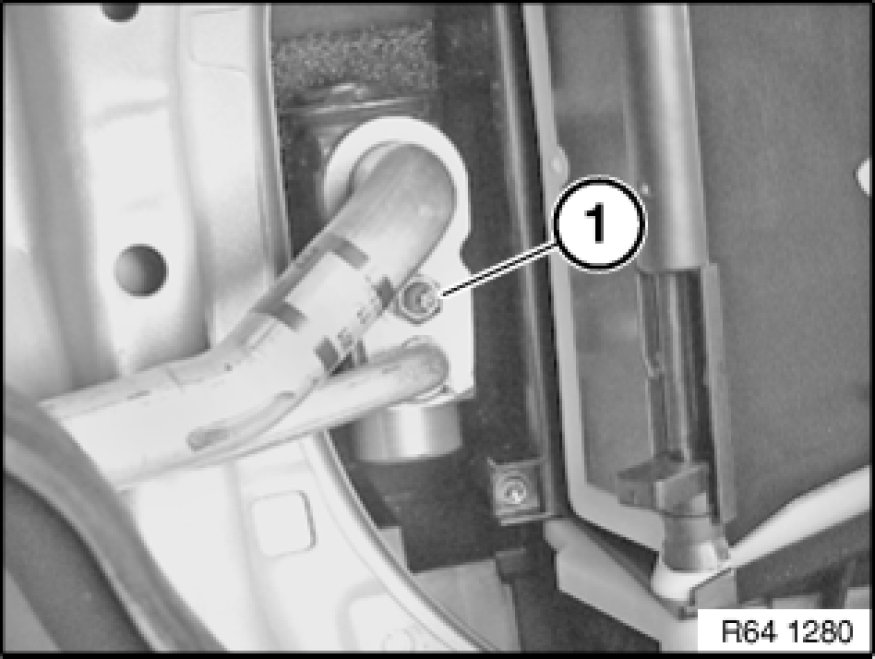
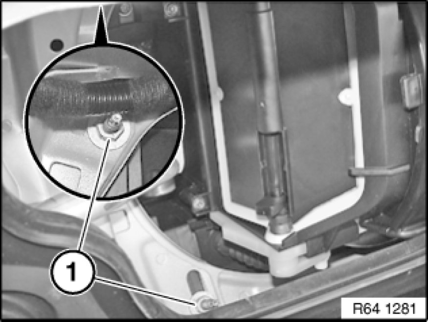
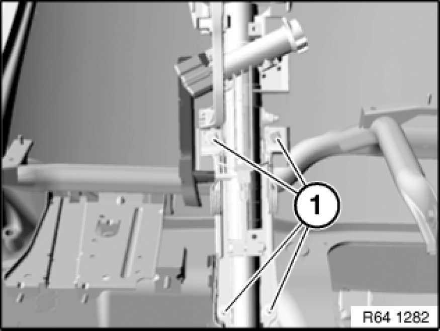
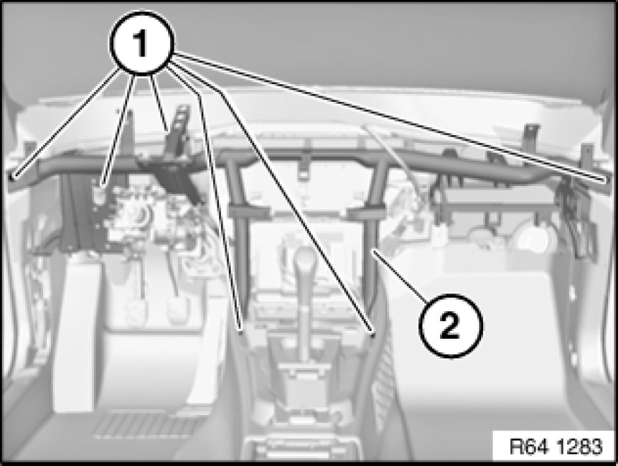
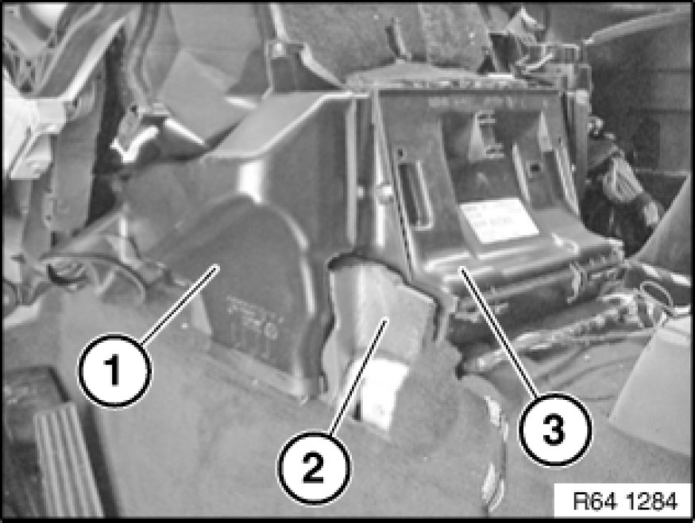
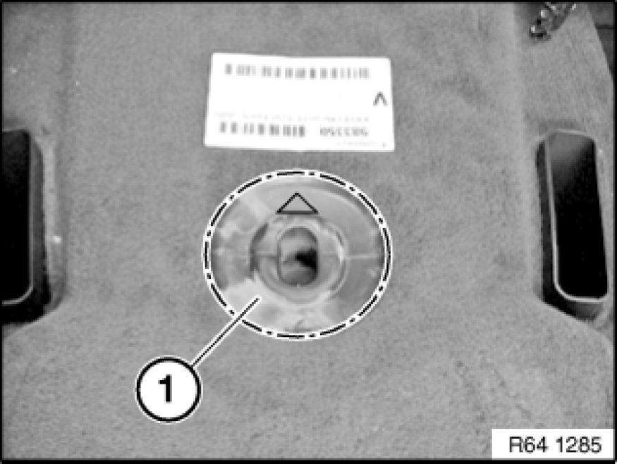

Housing Assembly HVAC: Service and Repair
64 11 205 - Removing and installing/replacing heater

Warning!
Avoid contact with refrigerant and refrigerant oil.
Follow safety instructions for handling refrigerant R 134a Instructions for Handling Refrigerant R 134a.
Follow safety instructions for handling refrigerant oil Instructions for Handling Refrigerant R 134a.

Important!
Risk of damage!
Restart engine only when A/C system has been correctly filled.
If A/C system is opened for more than 24 hours: Replacing drier insert for A/C system Removing and Installing/Replacing Dryer Bottle for Air Conditioner

Necessary preliminary tasks:
- Drawing off, evacuating and filling the A/C system Drawing off, Evacuating and Filling A/C System (R 134a) are not included in the time value given for this work operation
- Remove heater bulkhead 51 71 080 Removing and Installing/Replacing Heater Bulkhead

Note:
Disconnect coolant hoses

Detach hot water hoses (1) from heater and blow coolant out of heater core.
Seal connections on heater with plugs.
Installation Note:
Do not mix up coolant hoses.
Recycling
Coolant emerges when coolant hoses are detached.
Have a suitable collecting container ready.
Catch and dispose of escaping coolant.
Observe country-specific waste-disposal regulations.

Release screw (1) and remove refrigerant line from expansion valve.
Installation Note:
Tightening torque 64 53 11AZ [1][2]Expansion Valve.
Replace all sealing rings.

Release screws (1) on both sides.
Tightening torque 64 11 4AZ [1][2]Mechanical Specifications.
- Remove instrument panel trim 51 45 030 Removing and Installing Instrument Panel Trim

Release screws (1) and tilt steering column (2) downwards.
Tightening torque 32 31 6AZ [1][2]Specifications.

Release screws (1) and remove support tube (2) if necessary with assistance of a 2nd person from vehicle.
Tightening torque 51 17 15AZ Specifications.

Remove ventilation duct (1) on both sides.
Remove foam material (2) and remove heater (3) if necessary with assistance of a 2nd person from vehicle.
If necessary, disconnect associated cable loom from heater (3) and feed out.
Make sure heater (3) and foam material (2) are correctly seated on both sides.

Make sure rubber grommet (1) is correctly seated in order to ensure drainage of condensate.
Replacement:
- Assemble heater
After installation:
- Venting cooling system and checking for water leaks
- Evacuate and fill A/C system Drawing off, Evacuating and Filling A/C System (R 134a)